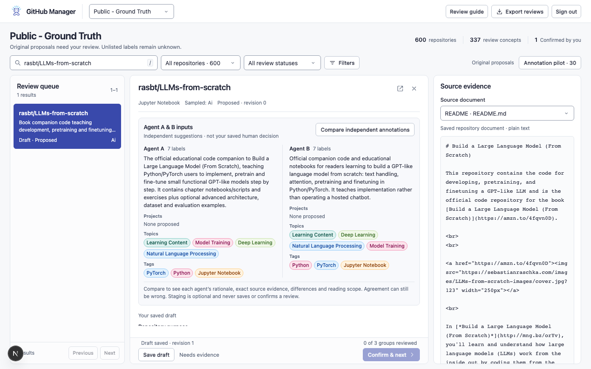
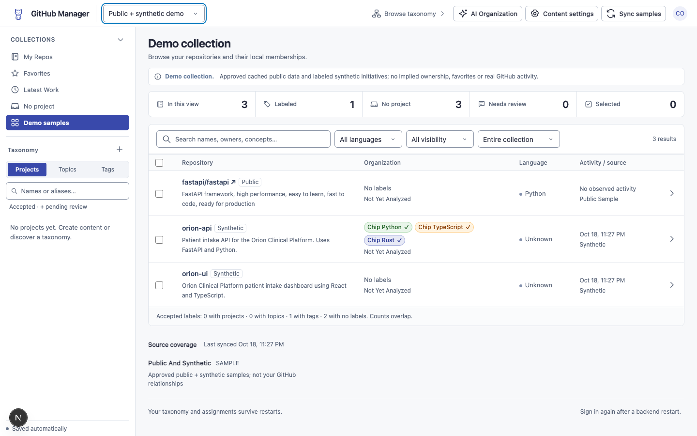

Ground Truth review
A live queue, grouped review and adjacent evidence with stable label colors. Separate saved drafts and explicit Confirm & next keep review moving. Select Public - Ground Truth after opening the app.
The compact repository list and adjacent Ground Truth review are now implemented in the app. These actual-screen captures use isolated test identities; the running app uses your connected account and saved reviews.

A live queue, grouped review and adjacent evidence with stable label colors. Separate saved drafts and explicit Confirm & next keep review moving. Select Public - Ground Truth after opening the app.

A compact KPI strip, crisp repository rows, smaller controls, readable colored labels and consistent white-on-Indigo selection states.
Implemented app captures, not mock outcomes. Corpus, annotations, saved reviews and readiness benchmarks are preserved. Screenshots and verification.